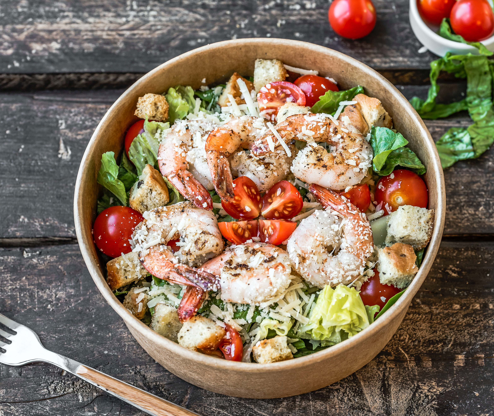

Salad

Description
This is the ultimative dish in the evening. Light, but tasty!
Eating this will evolve your eating game to the next level since this salad mixes
usual salad ingredients like tomatoes with sea fruit which is just amazing.
Follow this guide to learn how to make the perfect salad when you need to show off and
convince people that you are not only eating fast food. So pull your kitchen knives out and get
ready to chop some vegtables.
Ingredients
- tomatoes
- lettuce head
- radish
- paprika
- cucumber
- shrimps
- mushrooms
- vinegar
- seasoning
Steps
- Wash the mushrooms and start frying them in a frying pan.
- While frying the mushrooms start chopping the vegtables into small pieces.
- Wash the shrimps and remove their tails and exoskeleton. Then fry them until they are white.
- For the dressing mix water and vinegar 1:1. Add salt, pepper, garlic and onion powder until it tastes fine.
- Mix everything in a bowl.
- Enjoy!
Home